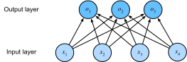

4.1. softmax 回归¶
在 3.1节 中，我们介绍了线性回归， 在 3.4节 中从零实现了它， 随后又在 3.5节 中改用深度学习框架的高级 API 来完成繁重的工作。
当我们想要回答多少？或几个？这类问题时， 回归就是我们诉诸的锤子。 如果你想预测一栋房子将以多少美元（价格）售出， 或想预测一支棒球队可能赢多少场比赛， 或想预测一位病人在出院前还要住院多少天， 那么你很可能需要一个回归模型。 然而，即使在回归模型内部，也存在重要的区别。 例如，房价永远不会为负， 而且其变化往往可能是相对于基准价格的相对变化。 因此，对价格的对数进行回归可能更为有效。 同样，病人住院的天数是一个离散非负随机变量。 因此，最小均方误差可能也不是理想的方法。 这类时间-事件建模还伴随着许多其他复杂问题， 它们由一门称为生存建模（survival modeling）的专业子领域来处理。
这里的目的不是要让你不堪重负， 而只是想让你知道，估计远不止最小化平方误差这么简单。 更广泛地说，监督学习也远不止回归。 在本节中，我们关注分类（classification）问题， 在这类问题中，我们搁置多少？这类问题， 转而关注属于哪一类？这类问题。
这封电子邮件应该放进垃圾邮件文件夹还是收件箱？
这位客户更可能订阅还是不订阅某项订阅服务？
这张图像描绘的是驴、狗、猫还是公鸡？
Aston 最可能接下来看哪部电影？
你接下来要读本书的哪一节？
通俗地说，机器学习从业者会重载分类一词， 用它来描述两个微妙不同的问题： (i) 只关心把样例硬性地分配给各个类别（类）的问题； (ii) 希望进行软分配， 即评估每个类别适用概率的问题。 这种区别往往会变得模糊，部分原因是： 即使我们只关心硬分配， 我们也常常使用进行软分配的模型。
更有甚者，在某些情况下可能有不止一个标签为真。 例如，一篇新闻文章可能同时涉及 娱乐、商业和太空飞行这些主题， 但不涉及医学或体育主题。 因此，把它单独归入上述类别之一， 用处不大。 这个问题通常称为多标签分类。 综述参见 Tsoumakas and Katakis (2007)， 图像标注中的有效算法参见 Huang et al. (2015)。
4.1.1. 分类¶
为了先熟悉一下，我们从一个简单的图像分类问题开始。 这里，每个输入由一幅 \(2\times2\) 的灰度图像构成。 我们可以用单个标量表示每个像素值， 从而得到四个特征 \(x_1, x_2, x_3, x_4\)。 此外，我们假设每幅图像属于 “猫”“鸡”和“狗”三个类别之一。
接下来，我们必须选择如何表示标签。 我们有两个显而易见的选择。 也许最自然的冲动是选择 \(y \in \{1, 2, 3\}\)， 其中整数分别表示 \(\{\textrm{dog}, \textrm{cat}, \textrm{chicken}\}\)。 这是在计算机上存储此类信息的一种好方法。 如果这些类别之间存在某种自然的顺序， 比如我们要预测的是 \(\{\textrm{baby}, \textrm{toddler}, \textrm{adolescent}, \textrm{young adult}, \textrm{adult}, \textrm{geriatric}\}\)， 那么把它转化为一个序数回归问题 并保持这种标签格式甚至还说得通。 关于不同类型排序损失函数的综述， 参见 Moon et al. (2010)； 关于处理多峰响应的贝叶斯方法， 参见 Beutel et al. (2014)。
一般来说，分类问题的各个类之间并没有自然的顺序。 幸运的是，统计学家很久以前就发明了一种 表示分类数据的简单方法：独热编码（one-hot encoding）。 独热编码是一个向量， 其分量个数等于类别的个数。 与特定实例所属类别对应的分量被设为 1， 所有其他分量都被设为 0。 在我们的例子中，标签 \(y\) 将是一个三维向量， \((1, 0, 0)\) 对应“猫”，\((0, 1, 0)\) 对应“鸡”， \((0, 0, 1)\) 对应“狗”：
4.1.1.1. 线性模型¶
为了估计与所有可能类别 相关联的条件概率， 我们需要一个具有多个输出的模型，每个类别对应一个输出。 为了用线性模型解决分类问题， 我们需要与输出个数一样多的仿射函数。 严格来说，我们只需要少一个， 因为最后一个类别必须等于 \(1\) 减去其他类别之和， 但出于对称性的考虑， 我们使用一种稍有冗余的参数化方式。 每个输出对应它自己的仿射函数。 在我们的例子中，由于有 4 个特征和 3 个可能的输出类别， 我们需要 12 个标量来表示权重（带下标的 \(w\)）， 以及 3 个标量来表示偏置（带下标的 \(b\)）。这给出：
对应的神经网络图如 图4.1.1 所示。 就像线性回归中一样， 我们使用单层神经网络。 由于每个输出 \(o_1, o_2\) 和 \(o_3\) 的计算 都依赖于每一个输入 \(x_1\)、\(x_2\)、\(x_3\) 和 \(x_4\)， 输出层也可以描述为全连接层。

图4.1.1 softmax 回归是一个单层神经网络。¶
为了使用更简洁的记号，我们采用向量和矩阵： \(\mathbf{o} = \mathbf{W} \mathbf{x} + \mathbf{b}\) 更适合数学和代码。 请注意，我们把所有权重汇集到一个 \(3 \times 4\) 矩阵中， 并把所有偏置 \(\mathbf{b} \in \mathbb{R}^3\) 汇集到一个向量中。
4.1.1.2. softmax 运算¶
假设有一个合适的损失函数， 我们可以直接尝试最小化 \(\mathbf{o}\) 与标签 \(\mathbf{y}\) 之间的差异。 虽然把分类当作向量值回归问题来处理 效果出奇地好， 但它在以下几个方面仍然不能令人满意：
无法保证输出 \(o_i\) 之和为 \(1\)，即无法像我们期望的概率那样表现。
即使输出之和为 \(1\)，也无法保证输出 \(o_i\) 非负，或者不超过 \(1\)。
这两个方面都使得估计问题难以求解， 而且解对离群值非常敏感。 例如，如果我们假设 卧室数量与某人买房的概率之间 存在正线性依赖关系， 那么在购买豪宅时概率可能会超过 \(1\)！ 因此，我们需要一种把输出“压缩”的机制。
我们可以通过许多方式来实现这一目标。 例如，我们可以假设输出 \(\mathbf{o}\) 是 \(\mathbf{y}\) 的损坏版本， 其中损坏是通过加入从正态分布中抽取的噪声 \(\boldsymbol{\epsilon}\) 发生的。 换句话说，\(\mathbf{y} = \mathbf{o} + \boldsymbol{\epsilon}\)， 其中 \(\epsilon_i \sim \mathcal{N}(0, \sigma^2)\)。 这就是所谓的 probit 模型， 由 Fechner (1860) 首次提出。 虽然它颇具吸引力，但与 softmax 相比， 它的效果并不那么好， 也不会带来特别漂亮的优化问题。
实现这一目标（并确保非负性）的另一种方法 是使用指数函数 \(P(y = i) \propto \exp o_i\)。 这确实满足这样的要求： 条件类别概率随 \(o_i\) 增大而增大， 它是单调的， 并且所有概率都非负。 然后我们可以把每个值除以它们的和， 从而把这些值变换为加起来等于 \(1\)。 这一过程称为规范化（normalization）。 把这两个部分结合起来， 就得到了 softmax 函数：
请注意，\(\mathbf{o}\) 中最大的坐标 对应 \(\hat{\mathbf{y}}\) 中最可能的类别。 此外，由于 softmax 运算 保持其各参数之间的顺序， 我们不需要计算 softmax 就能确定哪个类别被赋予了最高概率。因此，
softmax 的思想可以追溯到 Gibbs (1902)， 他从物理学中借鉴了相关思想。 再往前追溯，现代统计物理学的奠基人 Boltzmann 就用这个技巧来建模气体分子能态上的分布。 特别是，他发现热力学系综 （例如气体中的分子）中某个能量状态的普遍程度 与 \(\exp(-E/kT)\) 成正比。 这里，\(E\) 是某个状态的能量， \(T\) 是温度，\(k\) 是 Boltzmann 常数。 当统计学家谈论提高或降低 一个统计系统的“温度”时， 他们指的是改变 \(T\)， 以便偏向能量更低或更高的状态。 遵循 Gibbs 的思想，能量等价于误差。 基于能量的模型 (Ranzato et al., 2007) 在描述深度学习问题时采用了这一观点。
4.1.1.3. 向量化¶
为了提高计算效率， 我们在数据的小批量上对计算进行向量化。 假设给定一个由 \(n\) 个样例组成的小批量 \(\mathbf{X} \in \mathbb{R}^{n \times d}\)， 其维数（输入个数）为 \(d\)。 此外，假设输出有 \(q\) 个类别。 那么权重满足 \(\mathbf{W} \in \mathbb{R}^{d \times q}\)， 偏置满足 \(\mathbf{b} \in \mathbb{R}^{1\times q}\)。
这会把主要运算加速为 一个矩阵-矩阵乘积 \(\mathbf{X} \mathbf{W}\)。 此外，由于 \(\mathbf{X}\) 中的每一行表示一个数据样例， softmax 运算本身可以按行计算： 对 \(\mathbf{O}\) 的每一行，先对所有元素取指数， 然后按和进行规范化。 不过请注意，必须小心 避免对大数取指数和取对数， 因为这可能导致数值上溢或下溢。 深度学习框架会自动处理这一点。
4.1.2. 损失函数¶
既然我们已经有了从特征 \(\mathbf{x}\) 到概率 \(\mathbf{\hat{y}}\) 的映射， 就需要一种方法来优化这个映射的准确率。 我们将依赖最大似然估计， 这正是我们在 3.1.3节 中 为均方误差损失提供概率论依据时所使用的方法。
4.1.2.1. 对数似然¶
softmax 函数给出一个向量 \(\hat{\mathbf{y}}\)， 我们可以把它解释为在给定任意输入 \(\mathbf{x}\) 时 每个类别的（估计）条件概率， 例如 \(\hat{y}_1\) = \(P(y=\textrm{cat} \mid \mathbf{x})\)。 在下文中，我们假设对于特征为 \(\mathbf{X}\) 的数据集， 标签 \(\mathbf{Y}\) 用独热编码的标签向量表示。 我们可以通过检查在给定特征的情况下 实际类别在模型看来有多大的可能性， 来把估计值与现实进行比较：
我们之所以可以使用这种因式分解， 是因为我们假设每个标签都是独立地 从其各自的分布 \(P(\mathbf{y}\mid\mathbf{x}^{(i)})\) 中抽取的。 由于最大化各项的乘积很不方便， 我们取负对数，从而得到等价的 最小化负对数似然的问题：
其中，对于 \(q\) 个类别上的任意一对标签 \(\mathbf{y}\) 和模型预测 \(\hat{\mathbf{y}}\)， 损失函数 \(l\) 为
由于稍后将解释的原因， (4.1.8) 中的损失函数 通常称为交叉熵损失（cross-entropy loss）。 由于 \(\mathbf{y}\) 是长度为 \(q\) 的独热向量， 对其所有坐标 \(j\) 的求和中除一项外其余各项都消失。 请注意，只要 \(\hat{\mathbf{y}}\) 是概率向量， 损失 \(l(\mathbf{y}, \hat{\mathbf{y}})\) 就有下界 \(0\)： 没有任何一项大于 \(1\)， 因此它们的负对数不可能低于 \(0\)； 只有在我们确信地预测出实际标签时， 才有 \(l(\mathbf{y}, \hat{\mathbf{y}}) = 0\)。 对于任何有限的权重取值，这永远不可能发生， 因为要让 softmax 输出趋向 \(1\)， 就需要让相应的输入 \(o_i\) 趋向无穷大 （或者让所有其他输出 \(o_j\)（\(j \neq i\)）趋向负无穷大）。 即使我们的模型能够分配输出概率 \(0\)， 在赋予如此高的置信度时所犯的任何错误 都会带来无穷大的损失（\(-\log 0 = \infty\)）。
4.1.2.2. softmax 与交叉熵损失¶
由于 softmax 函数 及相应的交叉熵损失如此常见， 值得更好地理解它们是如何计算的。 把 (4.1.3) 代入 (4.1.8) 中损失的定义， 并利用 softmax 的定义，我们得到
为了更好地理解究竟发生了什么， 考虑关于任意 logit \(o_j\) 的导数。我们得到
换句话说，这个导数就是 我们的模型（通过 softmax 运算表达）所分配的概率 与实际发生的情况（通过独热标签向量中的元素表达） 之间的差。 在这个意义上，它与我们在回归中所看到的非常相似： 那里的梯度是观测值 \(y\) 与估计值 \(\hat{y}\) 之间的差。 这并非巧合。 在任何指数族模型中， 对数似然的梯度都恰好由这一项给出。 这一事实使得在实践中计算梯度变得容易。
现在考虑我们观察到的不是一个单一结果， 而是结果的整个分布的情形。 我们可以对标签 \(\mathbf{y}\) 使用与之前相同的表示。 唯一的区别在于， 我们不再使用只含二值元素（比如 \((0, 0, 1)\)）的向量， 而使用一个一般的概率向量，比如 \((0.1, 0.2, 0.7)\)。 我们之前用来在 (4.1.8) 中定义损失 \(l\) 的数学仍然适用， 只是解释稍微更一般一些。 它是标签分布下损失的期望值。 这种损失称为交叉熵损失， 也是分类问题中最常用的损失之一。 我们可以通过介绍一点信息论的基础知识 来揭开这个名字的奥秘。 简而言之，它度量的是 把我们看到的内容 \(\mathbf{y}\) 相对于 我们预测应该发生的内容 \(\hat{\mathbf{y}}\) 进行编码所需的比特数。 下面我们给出一个非常基本的解释。 关于信息论的更多细节，参见 Cover and Thomas (1999) 或 MacKay (2003)。
4.1.3. 信息论基础¶
许多深度学习论文使用来自信息论的直觉和术语。 为了理解它们，我们需要一些共同的语言。 本节就是一份生存指南。 信息论（information theory）研究 信息（也称为数据）的编码、解码、传输和操作问题。
4.1.3.1. 熵¶
信息论的核心思想是量化 数据中包含的信息量。 这为我们压缩数据的能力设定了一个极限。 对于分布 \(P\)，其熵（entropy）\(H[P]\) 定义为：
信息论的基本定理之一指出， 为了对从分布 \(P\) 中随机抽取的数据进行编码， 我们至少需要 \(H[P]\) 个“纳特”（nat）来编码 (Shannon, 1948)。 如果你想知道什么是“纳特”， 它相当于比特，只不过使用的是以 \(e\) 为底的编码， 而不是以 2 为底的编码。 因此，一个纳特等于 \(\frac{1}{\log(2)} \approx 1.44\) 比特。
4.1.3.2. 惊奇¶
你可能会想，压缩与预测有什么关系。 想象一下，我们有一个想要压缩的数据流。 如果我们总能轻松预测下一个词元， 那么这个数据就很容易压缩。 举一个极端的例子： 数据流中的每个词元总是取相同的值。 那是一个极其无聊的数据流！ 它不仅无聊，而且很容易预测。 由于词元总是相同的， 我们不必传输任何信息 就能传达该数据流的内容。 容易预测，也就容易压缩。
然而，如果我们无法完美预测每一个事件， 那么有时我们就会感到惊奇。 当一个事件被赋予较低的概率时， 我们的惊奇感会更强。 Claude Shannon 选定 \(\log \frac{1}{P(j)} = -\log P(j)\) 来量化某人在给事件 \(j\) 赋予（主观）概率 \(P(j)\) 后观察到该事件时的惊奇程度。 而在 (4.1.11) 中定义的熵， 则是在所赋予的概率 真正匹配数据生成过程时的期望惊奇。
4.1.3.3. 重新审视交叉熵¶
因此，如果熵是知道真实概率的人 所体验到的惊奇程度， 那么你可能会想：交叉熵又是什么呢？ 从 \(P\) 到 \(Q\) 的交叉熵，记作 \(H(P, Q)\)， 是一个具有主观概率 \(Q\) 的观察者 在看到实际按概率 \(P\) 生成的数据时 所经历的期望惊奇。 它由 \(H(P, Q) \stackrel{\textrm{def}}{=} \sum_j - P(j) \log Q(j)\) 给出。 当 \(P=Q\) 时，交叉熵达到可能的最小值。 在这种情况下，从 \(P\) 到 \(Q\) 的交叉熵为 \(H(P, P)= H(P)\)。
简而言之，我们可以从两个角度来看待 交叉熵分类目标： (i) 最大化观测数据的似然； (ii) 最小化我们传达标签 所需的惊奇（从而最小化所需的比特数）。
4.1.4. 小结与讨论¶
在本节中，我们遇到了第一个非平凡的损失函数， 它使我们能够在离散输出空间上进行优化。 其设计的关键在于我们采用了概率论方法， 把离散类别视为从概率分布中抽取的实例。 作为一个附带结果，我们遇到了 softmax， 这是一个方便的激活函数， 它把普通神经网络层的输出变换为 合法的离散概率分布。 我们看到，交叉熵损失与 softmax 结合后的导数 与平方误差的导数表现非常相似； 都是取期望行为与其预测之间的差。 而且，尽管我们只是触及了它的表面， 我们还是遇到了与统计物理和信息论 之间令人兴奋的联系。
虽然这足以让你继续前进， 也希望足以吊起你的胃口， 但我们在这里几乎没有深入。 除其他事项外，我们跳过了计算方面的考虑。 具体来说，对于任何具有 \(d\) 个输入和 \(q\) 个输出的全连接层， 其参数化和计算成本为 \(\mathcal{O}(dq)\)， 这在实践中可能高得令人望而却步。 幸运的是，把 \(d\) 个输入变换为 \(q\) 个输出的这一成本 可以通过近似和压缩来降低。 例如，Deep Fried Convnets (Yang et al., 2015) 结合使用置换、傅里叶变换和缩放， 把成本从二次降为对数线性。 类似的技术也适用于更高级的结构矩阵近似 (Sindhwani et al., 2015)。 最后，基于压缩因子 \(n\)， 我们可以使用类似四元数的分解 把成本降低到 \(\mathcal{O}(\frac{dq}{n})\)—— 前提仍是我们愿意用少量精度换取计算和存储成本的降低 (Zhang et al., 2021)。 这是一个活跃的研究领域。 其挑战性在于， 我们未必追求最紧凑的表示 或最少的浮点运算次数， 而是追求在现代 GPU 上能够最高效执行的解。
4.1.5. 练习¶
我们可以更深入地探讨指数族与 softmax 之间的联系。
计算 softmax 的交叉熵损失 \(l(\mathbf{y},\hat{\mathbf{y}})\) 的二阶导数。
计算由 \(\mathrm{softmax}(\mathbf{o})\) 给出的分布的方差，并证明它与上面计算的二阶导数一致。
假设我们有三个等概率出现的类别，即概率向量为 \((\frac{1}{3}, \frac{1}{3}, \frac{1}{3})\)。
如果我们尝试为它设计一种二进制编码，会有什么问题？
你能设计一种更好的编码吗？提示：如果我们尝试编码两个独立的观察会怎样？如果我们联合编码 \(n\) 个观察又会怎样？
在编码通过物理导线传输的信号时，工程师并不总是使用二进制编码。例如，PAM-3 使用三个信号电平 \(\{-1, 0, 1\}\)，而不是两个电平 \(\{0, 1\}\)。传输 \(\{0, \ldots, 7\}\) 范围内的一个整数需要多少个三进制单位？从电子学的角度看，为什么这可能是个更好的主意？
Bradley–Terry 模型使用 逻辑模型来刻画偏好。为了刻画用户在苹果和橙子之间的选择， 我们假定分数 \(o_{\textrm{apple}}\) 和 \(o_{\textrm{orange}}\)。我们的要求是： 分数越大，选择相应物品的可能性就越高； 并且分数最大的物品最可能被选中 (Bradley and Terry, 1952)。
证明 softmax 满足这一要求。
如果你想允许一个既不选苹果也不选橙子的默认选项，会发生什么？提示：现在用户有三个选择。
softmax 的名字来自如下映射：\(\textrm{RealSoftMax}(a, b) = \log (\exp(a) + \exp(b))\)。
证明 \(\textrm{RealSoftMax}(a, b) > \mathrm{max}(a, b)\)。
你能把这两个函数之间的差做到多小？提示：不失一般性， 可以设 \(b = 0\) 且 \(a \geq b\)。
证明在 \(\lambda > 0\) 的情况下，该结论对 \(\lambda^{-1} \textrm{RealSoftMax}(\lambda a, \lambda b)\) 也成立。
证明当 \(\lambda \to \infty\) 时，有 \(\lambda^{-1} \textrm{RealSoftMax}(\lambda a, \lambda b) \to \mathrm{max}(a, b)\)。
构造一个类似的 softmin 函数。
把它推广到多于两个数的情况。
函数 \(g(\mathbf{x}) \stackrel{\textrm{def}}{=} \log \sum_i \exp x_i\) 有时也称为对数配分函数。
证明该函数是凸的。提示：为此，利用一阶导数等于 softmax 函数给出的概率这一事实，并证明二阶导数是方差。
证明 \(g\) 具有平移不变性，即 \(g(\mathbf{x} + b) = g(\mathbf{x})\)。
如果某些坐标 \(x_i\) 非常大，会发生什么？如果它们都很小，又会发生什么？
证明如果取 \(b = \mathrm{max}_i x_i\)，我们就会得到一个数值稳定的实现。
假设我们有某个概率分布 \(P\)。再假设我们选取另一个分布 \(Q\)，满足 \(Q(i) \propto P(i)^\alpha\)（\(\alpha > 0\)）。
\(\alpha\) 取何值时相当于把温度加倍？取何值时相当于把温度减半？
如果让温度趋近 \(0\)，会发生什么？
如果让温度趋近 \(\infty\)，会发生什么？